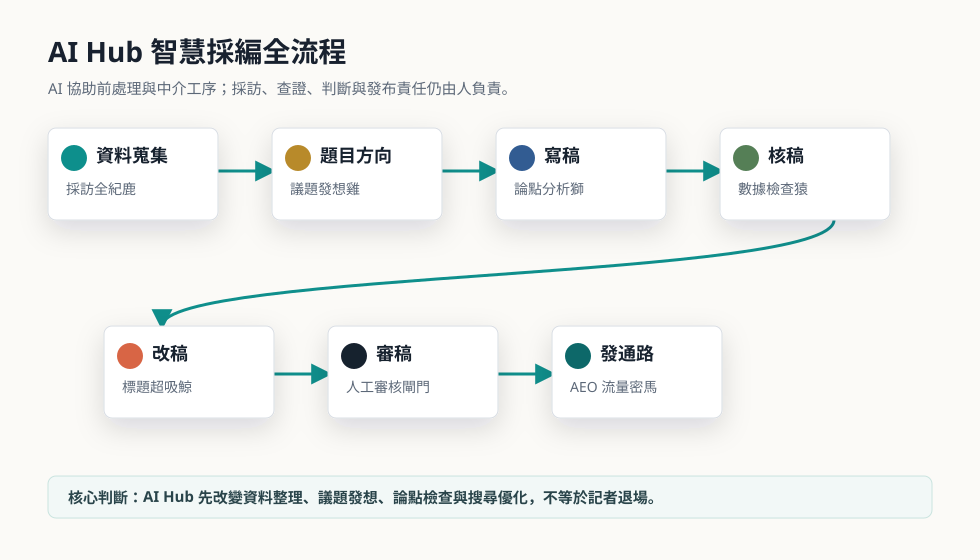
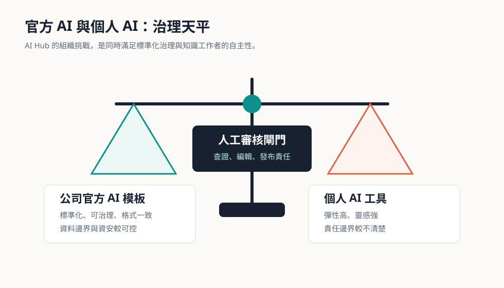
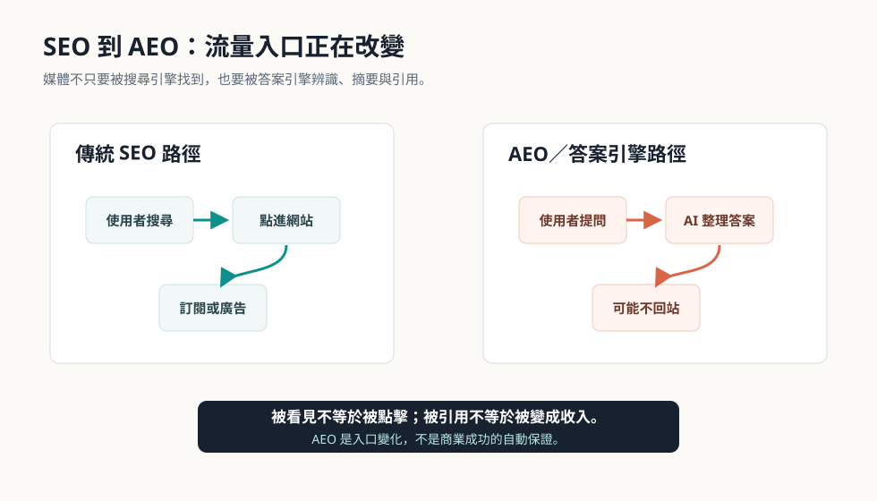
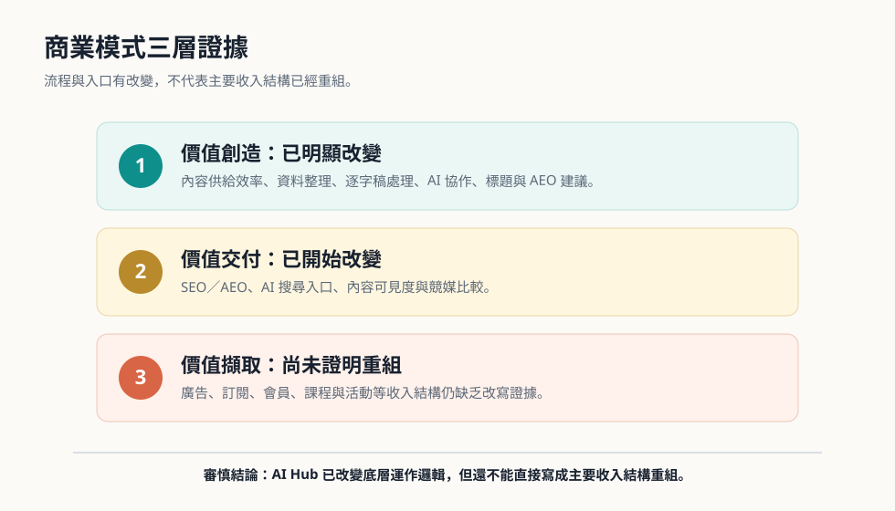
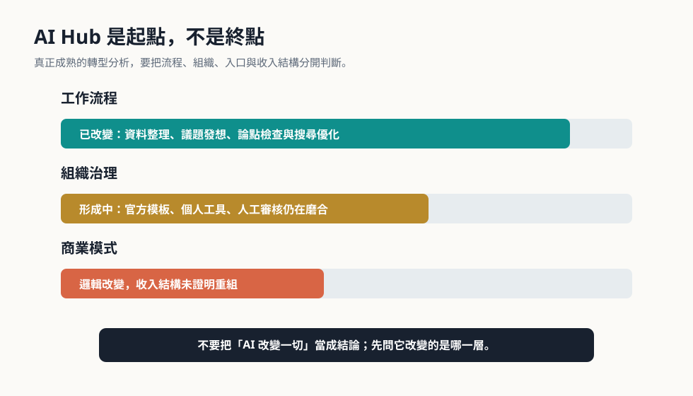

閱讀定位
這不是一篇「AI 很厲害」的展示頁。
本頁把 AI Hub 放在《天下雜誌》的真實工作情境中檢查：它如何進入採編流程、如何牽動公司工具與個人工具的拉扯，又如何把媒體競爭從 SEO 推向 AEO。
目標讀者包括管理學院大學生、媒體數位轉型研究者，以及關心 AI 如何被組織吸收的專業讀者。讀完後，重點不是記住 AI Hub 的功能名稱，而是學會區分流程改變、組織改變、流量入口改變與收入結構改變。
第一段：媒體業的 AI 焦慮與迷思
如果 AI Hub 不是記者替代器，那它到底改變了什麼？
AI 進入新聞編輯台後，外界很容易把它想成「自動寫稿機」，好像技術一導入，記者就會被系統取代、新聞產製也會變成一鍵完成。
《天下雜誌》的案例比較值得問的其實是另一件事：AI 如何被放進既有採編流程？它先改變的是資料整理、題目發想、論點檢查與搜尋優化，還是已經改寫了公司主要收入來源？
本頁採取由內而外的分析路徑：先看記者日常工序與組織治理，再看 AEO 與 AI 搜尋如何改變內容被看見的方式，最後才檢驗商業模式是否真的重組。
互動卡片
你以為 AI Hub 是什麼？
第二段：重塑工作模式
七大工序與 Agent 的協作，改變的是前處理與中介工作。
受訪記者每月約產出三篇文章，每篇約 1800 至 3000 字，一年約 36 至 40 篇，還要參與封面故事。這代表大量時間不是只花在最後寫字，而是花在蒐集背景、整理逐字稿、找趨勢、比對資料、修整結構與反覆審稿。
AI Hub 的功能並不是把記者移出新聞工作，而是把過去仰賴經驗與手動切換系統的工序，拆成多個 AI 節點協助完成。

第三段：組織模式的陣痛與治理
官方 AI 模板與個人工具並存，透露的是治理過渡期。
訪談內容指出，管理模式尚未出現大幅改變，但內部網站已因 AI 導入而明顯改版。過去可能用 Excel 管理題目、角度與獨特性；現在送題前可以選擇是否使用 AI 協助選題。
前線工作者仍會並用 ChatGPT、NotebookLM、Gemini、Claude 等工具。公司 AI 的優勢是模板固定、格式一致、較容易治理；個人 AI 的優勢則是彈性高、容易激發觀點，也更貼近日常工作習慣。
這不是「官方工具失敗」，而是知識工作很難一次被標準化。真正的挑戰，是如何在公司治理與記者自主性之間取得平衡，並把人工審核設為不可跳過的最後關卡。

第四段：AEO 流量入口的無聲戰爭
內部編輯能力，正在變成外部可見度競爭。
AI Hub 直接把 SEO／AEO 能力嵌入採編流程。「AEO 流量密馬」與「關鍵字 SE 鷗」分別對應 AI 搜尋與傳統 SEO，也反映媒體競爭正從搜尋結果頁延伸到答案引擎。
訪談提到，每月流量分析報告已新增 AI 搜尋項目，並比較《天下》與競媒在 AI 搜尋中的出現比例。這代表媒體不只要讓 Google 抓到文章，也要讓 AI 搜尋願意引用、摘要與辨識內容。

第五段：商業模式的殘酷檢驗
流程優化不等於收入結構已經重組。
AI Hub 問世前，《天下》已不是只靠紙本雜誌與紙本廣告的媒體，而是由訂閱、數位廣告、會員、Podcast、AI 語音朗讀、線上課程、論壇與專題頻道組成的混合模式。
訪談內容指出，目前多數收入仍走傳統模式，廣告仍是主要來源；AI 導入後的收入結構並沒有很明顯的改變。因此，不能因為流程變快、AEO 可見度提高，就直接宣稱商業模式已經再造完成。

第六段：結論與反思測驗
AI Hub 是轉型起點，不是轉型終點。
從內部看，AI Hub 讓記者工作從高度手動、跨系統切換，轉向 AI 協作下的資料整理、議題發想、結構檢查與搜尋優化。從組織看，它讓內部從 Excel 與分散工具，逐步走向改版後台、Agent、數位營運協作、AI COC 與公開 AI 原則。
從外部看，AI Hub 讓媒體競爭從 SEO 延伸到 AEO 與 AI 搜尋入口；但從商業模式看，它尚未被證明已經成熟為新的主要營收來源。

反思測驗
你能判斷哪些結論有證據嗎？
資料與產出說明
本頁依照你提供的企劃與 DOCX 分析稿重組。
- 主要內容：本次對話提供的《天下雜誌 AI Hub 導入後的數位轉型案例》互動式報告網頁企劃書。
- 補充依據：桌面檔案 C:\Users\USER5\Desktop\(深入分析)天下雜誌.docx。
- 網頁採用審慎語氣：流程與入口變化可明確呈現；收入結構重組則標示為尚未證明。
- 核心結論：AI Hub 的價值在於把採編流程、組織治理與外部可見度推向下一階段；真正的收入轉換仍需要更嚴格檢驗。